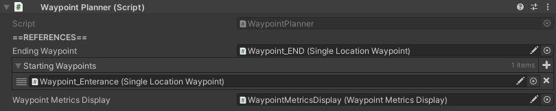

WaypointPlanner

How to Locate
The WaypointPlanner component is located on the GameObject with the name "AgentManager", which can be found in the hierarchy.
Settings
| Setting | Description |
|---|---|
| Ending Waypoint | Reference to the last waypoint in the simulation (such as the exit). Once an agent reaches this final waypoint, they are removed from the simulation. |
| Starting Waypoints | List of references to possible starting waypoints. When an agent is first added to the simulation, they will choose one of these waypoints at random to start their plan. |
| Waypoint Metrics Display |
ADVANCED USER SETTING. Reference to metrics display used for waypoints. |